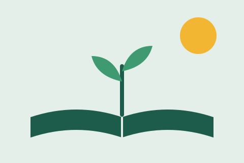

Reforço escolar
Aulas de leitura e matemática em três turnos.
Há dez anos oferecemos reforço escolar e alimentação a crianças da periferia. Você pode ajudar com seu tempo ou com uma doação.

Quero participarAulas de leitura e matemática em três turnos.
Café da manhã e almoço para 200 crianças.
Orientação sobre benefícios e documentos.
Endereço: Rua das Acácias, 120, Centro, São Paulo/SP
Telefone: (11) 4000-1234
E-mail: contato@institutosemear.org.br
Horário: segunda a sexta, das 8h às 17h